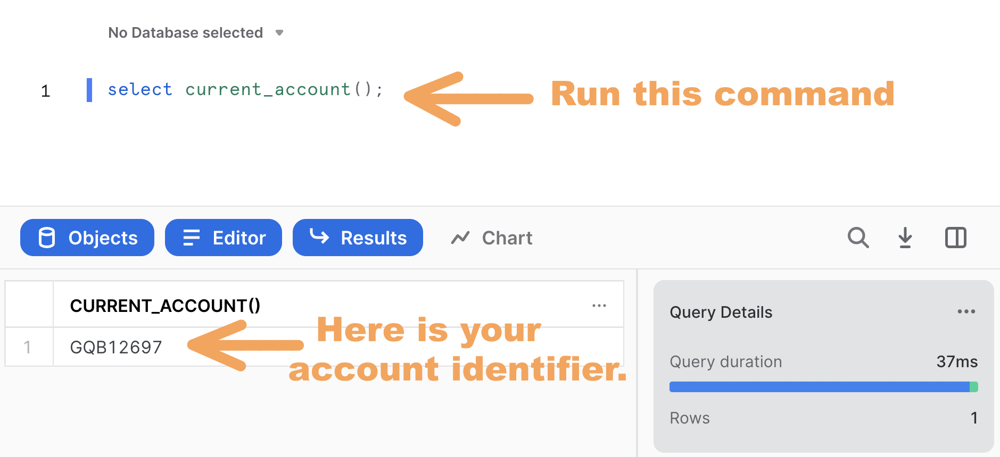

Data Clean Rooms (DCRs) are secure environments that enable multiple organizations (or divisions of an organization) to bring data together for joint analysis under defined guidelines and restrictions that keep the data secure. These guidelines control what data comes into the clean room, how the data within the clean room can be joined with other data in the clean room, the kinds of analytics that can be performed on the clean room data, and what data - if any - can leave the clean room environment.
Traditional DCR implementations require organizations to copy their data to a separate physical location. Snowflake's DCR model, however, leverages a unique architecture that enables each organization to maintain full control of their data in their own secure Snowflake account. In other words, two (or more) organizations can leverage Snowflake DCRs to join data without copying, moving, or sharing the underlying data, and to perform analyses on large amounts of data with high performance and scalability.
Prerequisites
- Familiarity with Snowflake's unique DCR architecture
- Working knowledge with Snowflake database objects and the Snowflake Web UI
- Clear understanding of how Snowflake Secure Data Sharing works
What You'll Learn
- How to create and deploy a DCR environment between two or more Snowflake accounts
- How DCR query requests are initiated, reviewed, and approved (or declined)
- How approved DCR query requests are executed
What You'll Build
This Quickstart lab will walk you through the process of deploying a Snowflake v5.5 DCR environment, which is our latest General Availability (GA) release.
- Provides ability to deploy two-party and multi-party DCR environments
- Leverages Jinja SQL templating language tags and logic
- Designed for straightforward upgrade path to the forthcoming v6.0 DCR environment (when released)
- Includes example query templates for some common advertising scenarios
What You'll Need
- Two Snowflake accounts - either Enterprise or Business Critical edition - that are deployed in the same cloud provider and region. You may procure these as Snowflake 30-day free trial accounts to make things easier for you - Simply go through the signup process twice on signup.snowflake.com, making certain to select the same cloud provider and region for each (see screenshot below). I also recommend selecting the same Snowflake edition for both accounts as well. Note: You can re-use the Snowflake accounts from the Build A Data Clean Room in Snowflake Quickstart if those are still available, if you'd like.
- Logins to both of the Snowflake accounts which have ACCOUNTADMIN role access (note that Snowflake free trial accounts provide this automatically, which is why I suggest using them for this Quickstart).
Attribution
The author wishes to recognize Rachel Blum, Michael Rainey, Mike Walton, Brett Klein, and Justin Langseth for their technical expertise and code contributions that were leveraged to create this Quickstart.
Watch The Video
It might be helpful to watch the following YouTube video where I provide a walk-through of Snowflake's DCR architecture, along with a demonstration of the DCR that was built during an older version of the DCR Quickstart:
Log Into Both Snowflake Accounts
The first task at hand is to log into each of the two Snowflake accounts that you'll be using for this Quickstart. As mentioned earlier, the logins that you use for these Snowflake accounts must have ACCOUNTADMIN role access and both accounts must be deployed in the same cloud and region. You should now log in to each account simultaneously using separate browser tabs or windows.
Designate Provider And Consumer Accounts
I referred to these as "Party1" and "Party2" in my YouTube video. But the DCR we're building now is capable of having multiple Consumers, so we're replacing the "Party1" and "Party2" labels with "PROVIDER_1" and "CONSUMER_1". At this point you should designate each of your two accounts likewise.
Acknowledge Snowflake Third Party Terms
This DCR deployment utilizes open-source Python packages that are built and provided by Anaconda. Consequently it'll be necessary to acknowledge the Snowflake Third Party Terms before proceeding. You can do this by following these instructions in both the PROVIDER_1 and CONSUMER_1 accounts. Again, you must successfully complete this step in order to proceed with the DCR installation process, so go ahead and do it now.
Note PROVIDER_1 And CONSUMER_1 Account Identifiers
Each Snowflake account is assigned a unique identifier (sometimes called a Locator) within its cloud provider and region. If you took my recommendation to use Snowflake 30-day free trial accounts then these will be a random combination of letters and numbers, such as "GQB12697". Please go ahead and determine your account identifers by opening a new worksheet and running the following command in each account's UI:
select current_account();
Here's a screenshot of what it looks like when I did this for one of my accounts:

Be sure to note which account identifier corresponds to the PROVIDER_1 and CONSUMER_1 accounts as you'll need these below.
Generate PROVIDER_1 and CONSUMER_1 Setup Scripts
Now that you've got your account identifiers ready, it's time to prepare the cleanroom deployment scripts. Although you're welcome to clone our data-clean-room-quickstart git repository and then manually find/replace the account identifiers as needed (instructions for doing this are located here), it's a whole lot easier to just use our nifty Streamlit-based DCR Setup Assistant app to automate that process for you. My recommendation is that you take the automated approach, so I'll walk you through the process right now.
First, click here to open our Streamlit-based DCR Setup Assistant app.
Next, place your PROVIDER_1 and CONSUMER_1 account identifiers in their respective fields, as I've done here:
Note that you should leave the database abbreviation field blank, as I've done.
Now click the Run button. You'll see a fun snowfall animation, and then a Scripts Ready for Download! message will display. At that point you can click the Download Scripts button, which will initiate the download of a file called dcr_scripts.zip to your local machine. Go ahead and unzip this file, which contains a set of SQL scripts that were custom-generated by the DCR Setup Assistant for your specific account IDs:
provider_init.sqlprovider_data.sqlprovider_templates.sqlconsumer_init.sqlconsumer_data.sqlprovider_enable_consumer.sqlconsumer_request.sql
Your script files may be prefixed with numbers. That's okay. Let's move on...
We're now ready to run the scripts that the DCR Setup Assistant generated for us. Let's get started!
Run The Provider Initialization Script
Open a new worksheet in the PROVIDER_1 account's UI and rename it to provider_init.sql. Next, either import or copy/paste the contents of the provider_init.sql script into this new worksheet. Go ahead and run the entire script - the easiest way to do this is to place your cursor anywhere in the worksheet, do a "Select All", and then click the blue triangle run button in the upper-right corner. The script should run without error. Note that it is designed to be re-runnable, so if you do encounter any issues (or if it gets "stuck" for any reason) you can confidently re-run the entire script as needed. It should complete execution within 1-2 minutes.
Take a look at the database and schemas that were created during its execution. You should notice that a database called DCR_SAMP_PROVIDER_DB has been created - this database contains all of the Provider's DCR objects. For future reference, the DCR Setup Assistant App that we used to generate these scripts will replace DCR_SAMP prefix here with whatever you put into the "Database Abbreviation" field (we simply left that field blank for the purposes of this Quickstart, however). I'll provide more details about the rest of the objects that the script created in this database later - for now, however, let's continue on!
Run The Provider Data and Templates Scripts
Open a new worksheet in the PROVIDER_1 account's UI and rename it to provider_data.sql. Next, either import or copy/paste the contents of the provider_data.sql script into this new worksheet, and then run it in its entirety just like you did in the prior step. As before, this script should run without error, and can be re-run if needed.
Do likewise for the provider_templates.sql script. Note, however, that this script is not designed to be re-runnable, so if you do happen to encounter any issues then you'll want to completely clean out the DCR_TEMPLATES table before running it again by executing this command:
delete from dcr_samp_provider_db.templates.dcr_templates;
Run The Consumer Initialization and Data Scripts
Open a new worksheet in the CONSUMER_1 account's UI and rename it to consumer_init.sql. Either import or copy/paste the contents of the consumer_init.sql script into this new worksheet. Go ahead and run the entire script, just like you did for the Provider account scripts. It should run without error within 1-2 minutes, and - like its Provider Initialization Script counterpart - is designed to be re-runnable as needed.
Do likewise for the consumer_data.sql script.
Notice how these scripts have created two databases - DCR_SAMP_APP and DCR_SAMP_CONSUMER - in addition to a variety of schemas. Again, I'll provide more details about the objects in these schemas later.
Run The Consumer Enablement Script
It's now time to enable the newly-created Consumer. This is done from the Provider's account, so return to the PROVIDER_1 account's UI and open a new worksheet named provider_enable_consumer.sql.
Either import or copy/paste the contents of the provider_enable_consumer.sql script into this new worksheet and run it in its entirety.

As noted in the screenshot above, the script starts a fleet of six request processing tasks separated by 8-second intervals. Each task is scheduled to run once a minute. If you look at the definition of each task, you'll note the inclusion of a WHEN clause that checks for data in a stream object defined for the Consumer's REQUESTS table before running the task. For example:
CREATE OR REPLACE TASK dcr_samp_provider_db.admin.process_requests_AIB26900_1
SCHEDULE = '1 minute' WAREHOUSE = 'app_wh'
WHEN SYSTEM$STREAM_HAS_DATA('dcr_samp_provider_db.admin.request_stream_AIB26900')
AS call dcr_samp_provider_db.admin.process_requests('AIB26900');
We'll discuss this stream object later. For now, just know that the WHEN clause in these task definitions ensures that each task only runs when there's at least one request waiting to be processed, which allows the APP_WH virtual warehouse to shut down when the DCR deployment isn't in use. That's right - these tasks won't consume credits until a new record is added to the Consumer's REQUESTS table, so there's no need for concern! But if you ever do need to shut them down then simply copy the corresponding SUSPEND commands to a new worksheet, uncomment, and run (I've highlighted as "Optional" in the screenshot above).
Now that we have our two-party DCR deployed, let's take a look at what's been created for us. As we examine the various components, we'll build ourselves an object map that we can use later to keep track of where everything is located and how it all works together.
Provider's Source Tables and Row Access Policy
Let's start off with looking at the source tables in the PROVIDER_1 account's UI. It turns out that the provider_data.sql script created three sample tables: CUSTOMERS, EXPOSURES, and SUBSCRIPTIONS. We'll use these later when we run through a demo of the DCR - but, for now, just know that these are the three datasets that PROVIDER_1 is contributing to the DCR. You'll find them in the DCR_SAMP_PROVIDER_DB database, under SHARED_SCHEMA:
Now, go back and open your provider_init.sql worksheet, then scroll down to where the DATA_FIREWALL row access policy is created:
You'll recall from my Build A Data Clean Room in Snowflake Quickstart how a row access policy acts as a Data Firewall to protect the Provider's data. Well, here it is again, protecting these three tables in SHARED_SCHEMA. Now, you'll notice that the row access policy is coded such that it leverages the REQUEST_LOG table that's located in the ADMIN schema. Although this table logs all query approval requests, you should observe that the row access policy is coded such that it only allows queries that have been flagged as Approved to return data to the Consumer. That other Quickstart had two tables (REQUEST_STATUS and APPROVED_QUERY_REQUESTS) so this is definitely a more elegant approach. Notice also that this row access policy references a PARTY_ACCOUNT column, which enables multi-party DCR deployments (we'll look at this later).
Let's begin drawing a map of the DCR objects we've explored so far:
Lovely. We're off to a good start.
Provider Query Templates
Now that we know where the Provider's source data lives and how it's protected, let's take a look at how query requests from the Consumer get processed. You'll recall from my Build A Data Clean Room in Snowflake Quickstart that each Consumer query request was the combination of a query template along with one or more available values, and that these were stored in tables called QUERY_REQUESTS, QUERY_TEMPLATES, and AVAILABLE_VALUES respectively. Well, one of the big improvements offered by this v5.5 DCR deployment is the use of Jinja SQL templating language tags and logic. I say that because Jinja SQL templates provide far better protection against SQL Injection attacks than the rudimentary JavaScript-based approach used by the prior Quickstart, plus they enable the use of conditionals and looping constructs as part of the SQL template definition. In other words, they offer us a more powerful and secure language for defining the query templates that will be used by our DCR environment.
We installed some sample templates during our deployment process, and you'll find them in your provider_templates.sql worksheet. If you study them over, you'll see how we leverage some of that nifty conditional and looping logic in our SQL query template definitions, along with how substitution parameters are specified:

Another thing you should notice is how the list of available values gets included as part of the template definition records (we'll refer to these as "dimensions" from now on). This is - once again - a more elegant approach than that of the prior Quickstart as it elimates the need for a separate AVAILABLE_VALUES table. We'll spend some more time with these templates later when we run through a demo of the DCR.
While we're on the subject of Jinja templates, there's one more thing I'd like to point out. The logic used for processing these Jinja templates is Python-based, which works out well because Snowflake provides great support for writing stored procedures and user-defined functions (UDFs) using Python. You'll find the TEMPLATES.GET_SQL_JINJA UDF defined in the provider_init.sql script.
We'll hold off on updating our DCR object map for a moment, since things are about to get a lot more interesting...
Provider Request Processing
The next bit we need examine is the processing logic that determines whether or not incoming Consumer query requests are approved. This logic is contained within the ADMIN.PROCESS_REQUESTS stored procedure, which is deployed by the provider_enable_consumer.sql script. There's a lot going on here, so let's break it down. Here we go:
- A: Consumer requests permission to run a query template with one (or more) dimensions. This is written as record to a
REQUESTStable that has been shared with the Provider. Note that theprovider_enable_Consumer.sqlscript creates a database in the Provider's account using this incoming share, and names it using the Consumer's Account Identifier. - B: A stream object in the Provider's
ADMINschema monitors the aforementionedREQUESTStable so that it can be checked for incoming requests. - C: The
ADMIN.PROCESS_REQUESTSstored procedure is called by a fleet of six request processing tasks separated by 8-second intervals. As we discussed earlier, each task definition includes aWHENclause that checks for data in the stream object to ensure execution takes place only when there's at least one request waiting to be processed. - D: When at least one request is ready for processing, the
ADMIN.PROCESS_REQUESTSstored procedure will fetch the waiting request record(s) from the stream. Note that this stored procedure is deployed by theprovider_enable_consumer.sqlscript, so that's the place to look if you'd like to examine its processing logic. - E: From there, the
ADMIN.PROCESS_REQUESTSstored procedure evaluates the request(s) to determine whether or not approval should be granted. The results are written to theADMIN.REQUEST_LOGtable.
As mentioned earlier, the ADMIN.REQUEST_LOG table contains a record of all query approval requests, while the SHARED_SCHEMA.DATA_FIREWALL row access policy is coded such that it only allows Consumer queries that have been flagged as Approved by the ADMIN.PROCESS_REQUESTS stored procedure. Also, it's worth noting that the ADMIN.PROCESS_REQUESTS stored procedure creates and populates an ADMIN.REQUEST_TMP table - this just temporarily stores the request stream data as part of the request processing flow.
Whew! Alright, now let's update our DCR object map with all of these additional objects!
Provider's Clean Room Objects
Now that we've examined how query requests get processed, let's take a look at the Provider's data objects that are shared with the Consumer. If you look back at the provider_init.sql script you should notice the creation of a CLEANROOM schema, which later gets added to the DCR_SAMP_APP share with the Consumer account.
Now, have a look at provider_data.sql script where you'll find that a set of secure views is created in the CLEANROOM schema on top of the SHARED_SCHEMA source tables. Specifically, this script deploys the PROVIDER_CUSTOMERS_VW, PROVIDER_EXPOSURES_VW, and PROVIDER_SUBSCRIPTIONS_VW secure views, which correspond to the CUSTOMERS, EXPOSURES, and SUBSCRIPTIONS sample source tables in SHARED_SCHEMA respectively. Unlike the prior Quickstart, these secure views are what actually gets shared with the Consumer within the context of the CLEANROOM schema (and not the tables themselves). This is a best practice that provides several advantages:
- Allows for row- and column-level security to be applied on a per-Consumer basis (for multitenant DCR deployments)
- Enables schema translation for Consumer consumption, as needed
It's time now to take a look at how the DATA_FIREWALL row access policy gets activated by the provider_data.sql script so that it can protect the Provider's source tables:
As you can see, our DATA_FIREWALL row access policy is being added to those secure views we just discussed. The end result is a combination of secure views working together with the row access policy to protect the Provider's source data in our DCR deployment.
The provider_init.sql script creates a some additional objects in the CLEANROOM schema:
TEMPLATES- Secure view that allows each Consumer account to see their templates in theTEMPLATES.DCR_TEMPLATEStablePROVIDER_LOG- Secure view that allows each Consumer to see the status of their request rows in theADMIN.REQUEST_LOGtablePROVIDER_ACCOUNT- Table which simply contains the Provider's Snowflake Account ID
Let's add all of these these to our DCR object map:
Consumer's Source, Settings, and Instance Tables
Now let's have a look at the source tables in the CONSUMER_1 account's UI. Here we'll find two sample tables: CONVERSIONS and CUSTOMERS in the DCR_SAMP_CONSUMER database, under the MYDATA schema:
We'll use these later when we run through a demo of the DCR.
Next, take a look at the contents of the LOCAL.USER_SETTINGS table, which gets created at the very end of the consumer_data.sql script:
This relatively simple table serves an important purpose: It's the local storage object for metadata that gets used when DCR requests are created by the Consumer. If you go back and have a look at the Jinja SQL query templates in the provider_templates.sql script you'll find a number of substitution parameters that directly correlate to these settings (Hint: They'll be prefixed with consumer_ such as consumer_email_field). This flexibility makes it possible for a single set of Jinja SQL query templates to be leveraged by a variety of Consumer tenants - each with their own schema definitions - within the same DCR deployment.
An additional table that gets created by the consumer_init.sql script is UTIL.INSTANCE. This table gets populated with a single record containing a randomly-generated ID which should be unique to each Consumer instance.
Consumer Request Processing
Having brought up Jinja SQL templates makes for a great segue into our next topic, which is the logic behind the formation of a query request by the Consumer. Remember that a query request is how the Consumer asks permission to run a query against the Provider's data, and it's formed by a combination of a query template along with the selection of one (or more) dimensions. The Consumer initiates a request by calling the REQUEST stored procedure, which builds the request record and stores it in the REQUESTS table. This stored procedure is deployed by the consumer_init.sql script. Here's an overview of how it works:
- A: The
REQUESTstored procedure fetches metadata from theLOCAL.USER_SETTINGStable, along with the Consumer instance ID from theUTIL.INSTANCEtable, and combines these with a JSON document containing the parameters provided by the Consumer as part of theREQUESTstored procedure call. These will be used to populate the query template's substitution parameters in the next step. - B: A proposed query is then constructed by the Jinja SQL interpreter UDF that we discussed earlier, which is a combination of the query template selected by the Consumer and substitution parameters populated using values from step A above.
- C: The completed request record is written to the
REQUESTStable.
As mentioned earlier, the REQUESTS table that has been shared with the Provider, and the records we've just written to it will now be processed by the Provider's PROCESS_REQUEST stored procedure as described earlier.
Well now, it looks like we've worked our way through everything. Here's the final version of our DCR object map with all of the Provider and Consumer objects filled in:
Now that we've got a good idea of where everything's located and how it all works together, it's time to put our sparkly new DCR into action. Open a new worksheet in the CONSUMER_1 account's UI and rename it to consumer_request.sql. Either import or copy/paste the contents of the consumer_request.sql script into this new worksheet. Go ahead and run the first couple of commands to set the current role and virtual warehouse context. You're welcome to run the queries that appear directly below those commands if you'd like - these give you a chance to familiarize yourself with the current state of the Consumer before getting underway.
Demo 1: Customer Overlap on EMAIL
It's time now to run the call command in the first demo section that executes the REQUEST stored procedure for the customer_overlap template. You should see a Request Sent acknowledgment returned after a moment or two.
Wait at least 5-10 seconds so that one of the fleet of tasks in the Provider's account which monitor the stream on the REQUESTS table will have recognized that a new request has been inserted. That task will have thus called the PROCESS_REQUESTS stored procedure, which then evaluates the request and writes its decision back to the REQUEST_LOG table.
You can now go ahead and run the next query, which selects from the DCR_SAMP_APP.CLEANROOM.PROVIDER_LOG table. Take a look at the record that gets returned. You should see your request's unique ID in the first column, an APPROVED column which shows Boolean TRUE, and finally a third column which contains the proposed query that was assembled for you by the GET_SQL_JINJA UDF. Assuming all of this this is as I've just described, you're now approved to proceed with your query! Here's how to do that:
- Click on the query text cell in the third column.
- Click on the "Copy" icon in the text focus box on the lower right (see my screenshot below).
- Paste the query text into the worksheet beneath the
\\ run querycomment line which appears directly below thePROVIDER_LOGquery that you just ran. - And, finally, run the query that you just pasted into the worksheet.
You should get a result set back which provides overlapping customer counts (called OVERLAP in the result set) grouped by columns ZIP, PETS, and AGE_BAND.
Now for some experimentation. Go back and have a look at the customer_overlap template definition in the provider_templates.sql script. You'll notice that this list of dimensions is included with that template: c.pets|c.zip|p.status|p.age_band. This means you're welcome to use any combination of those dimensions in your query request. Try replacing c.pets with p.status, for example. Or, perhaps, try adding c.phone to the dimension list and see what happens - The phone column is, after all, present in the Consumer's CUSTOMERS table, so why doesn't this work? (Because it's not in the template's list of approved dimensions!)
By now you've probably noticed the introduction of a timestamp associated with the Consumer's MYDATA.CUSTOMERS table in the text of the proposed query. This timestamp automatically gets generated by the REQUEST stored procedure if it gets called with a null value passed for the AT_TIMESTAMP parameter. Although the AT_TIMESTAMP parameter is optional for two-party DCR deployments, it must be specified when multiple Providers are present in order to ensure cross-timezone compatibility. Just something to keep in mind if you end up deploying a multi-provider DCR.
Demo 2: Customer Overlap on EMAIL or PHONE
Go ahead and work through the query request in the second demo section. This request demonstrates the inclusion of a WHERE clause in addition to the list of dimensions. Also, if you compare the customer_overlap_waterfall template it requests with that of the prior example (customer_overlap) you should notice that it joins the Provider and Consumer datasets on matches between EMAIL or PHONE columns - hence the inclusion of Waterfall in the template name. Execution of the proposed query - once approved - might take a bit longer to complete than the prior example did. Feel free to experiment with the list of dimensions and the WHERE clause, and note that you can even remove the WHERE clause if you want to.
Another thing you may have noticed in the text of the proposed query is the inclusion of a having count(distinct p.email) > 25 clause. This is actually part of the query template specification, and is done to help preserve Differential Privacy in the event of a Thin-Slicing attack whereby a Consumer attempts to isolate specific records in the Provider's dataset. This particular clause prevents the query from returning any groups of fewer than 25 records as an example.
Demo 3: Campaign Conversions
The campaign_conversion template for this request joins the Providers advertising campaign exposure dataset with the Consumer's customer conversion data to help evaluate advertising campaign effectiveness. You can use the same techniques as with the prior examples to check for request approval and to run the proposed query. Again, feel free to experiment - both with the request process as well as testing out that DATA_FIREWALL row access policy.
Now that you've got your framework implemented and a pretty good understanding of how it all works, it's time to figure out what's next in your DCR journey. Here's some options...
Adding Additional Provider Source Tables
Use the following steps as a guide for adding additional source tables to the Provider side of the DCR framework:
- Apply the
SHARED_SCHEMA.DATA_FIREWALLrow access policy to the new tables using the the commands in the "Shields Up" section of theprovider_init.sqlscript as a guide. Be sure the column referenced by the row access policy matches one that exists in the table. - Create secure views that reference the new tables in the
DCR_SAMP_PROVIDER_DB.CLEANROOMschema. You can leverage the examples provided in theprovider_data.sqlscript. - If the new tables reside in a database other than
DCR_SAMP_PROVIDER_DBthen you'll need to grant REFERENCE_USAGE on that database to theDCR_SAMP_APPshare. For example:grant reference_usage on database new_table_db to share dcr_samp_app; - Grant
SELECTprivilege on the newly-created secure views to theDCR_SAMP_APPshare. For example:grant select on dcr_samp_provider_db.cleanroom.new_secure_view to share dcr_samp_app;
The newly-created secure views can now be referenced in query templates and used as part of future DCR requests.
Adding Additional Templates
As mentioned earlier, this DCR's query templates leverage Jinja SQL templating language tags and logic for query request processing. Use the provider_templates.sql script as a guide for writing your own templates, especially as it pertains to conditional and looping logic.
You'll likely make extensive use of substitution parameters in these templates, which are denoted using double braces (eg. {{parameter_name}}). Substitution parameters can refer to:
- Metadata from the Consumer's
LOCAL.USER_SETTINGStable - The Consumer's instance ID from the
UTIL.INSTANCEtable - Parameters provided by the Consumer as part of the
REQUESTstored procedure call (such as the dimension or WHERE clause)
All templates reside as records in the TEMPLATES.DCR_TEMPLATES table, and each is assigned to a corresponding Consumer account ID by way of the PARTY_ACCOUNT column value.
Adding Additional Consumers
Adding additional Consumers to the DCR deployment is a relatively straightforward process. First, it'll be necessary to acknowledge the Snowflake Third Party Terms from the new Consumer account, so follow these instructions accordingly.
Next, you'll want to use our Streamlit-based DCR Setup Assistant app to automate the process of generating the necessary scripts. This time, however, you'll select the Add Add'l Consumer option on the action menu. You'll be asked to provide the account identifiers for the existing Provider and the new Consumer accounts. As before, simply click the Run button, wait for the fun snowfall animation and the Scripts Ready for Download! message to display, and then click the Download Scripts button. The dcr_scripts.zip file that gets downloaded to your local machine will contain the custom-generated scripts that you'll need for adding the new Consumer account to your DCR deployment. You should work through these scripts in the following order:
provider_templates.sql- Run this in the Provider account to add sample templates for the new Consumer account (or, alternatively, you can use these as a model for your own templates).provider_add_consumer_to_share.sql- Run in the Provider account to add the new Consumer account to theDCR_SAMP_APPshare.consumer_init.sql- Run this in the new Consumer account to create theDCR_SAMP_CONSUMERdatabase and corresponding objects.consumer_data.sql- Run this in the new Consumer account if you'd like to create theMYDATAschema along with a couple of sample dataset tables. Alternatively, you can use this script as a model for deploying your own datasets - just be certain to create aLOCALschema along with aUSER_SETTINGStable in the new Consumer account.provider_enable_new_consumer.sql- Run this in the Provider account to create a database from the new Consumer account'sDCR_SAMP_REQUESTSshare, and to create the stream and tasks for processing query requests from the new Consumer account.
The DCR Setup Assistant also custom-generates a consumer_request.sql script which provides a set of commands and queries for testing the newly-created Consumer account using the templates and data deployed by the provider_templates.sql and consumer_data.sql scripts, respectively.
Adding Additional Providers
The inclusion of additional Providers in the DCR deployment allows Consumers to run queries against each Provider independently, or to run multi-party joins across two (or more) Providers. The process of adding an additional Provider bears some similarity to the installation process we just went through for the initial DCR deployment process. You'll need to acknowledge the Snowflake Third Party Terms from the new Provider account before getting started, and these instructions walk you through that process.
Use our Streamlit-based DCR Setup Assistant app to automate the process of generating the necessary scripts. Start by selecting the Add Add'l Provider option on the action menu. You'll then be asked to provide the account identifiers for the existing Consumer and the new Provider accounts. Click the Run button, wait for the fun snowfall animation and the Scripts Ready for Download! message to display, and then click the Download Scripts button. The dcr_scripts.zip file that gets downloaded to your local machine will contain custom-generated scripts for adding the new Provider account to your DCR deployment. You should work through them in the following order:
provider_init.sql- Run this in the new Provider account to create theDCR_SAMP_PROVIDER_DBdatabase and corresponding objects.provider_data.sql- Run this in the new Provider account if you'd like to create the sample dataset tables inSHARED_SCHEMA, along with their correspondingCLEANROOMschema secure views. This script also adds theDATA_FIREWALLrow access policy those secure views. Alternatively, you can use this script as a model for deploying your own datasets.provider_templates.sql- Run this in the new Provider account to add templates for the sample datasets, or use these as a model for your own datasets. Note that the Multiparty templates demonstrate how to Consumer data can be joined with datasets from multiple Provider accounts.consumer_init_new_provider.sql- Run this in the Consumer account to create the Provider-specific schema in theDCR_SAMP_CONSUMERdatabase for submitting query requests to the new Provider.provider_enable_consumer.sql- Run this in the new Provider account to create a database from the Consumer account'sDCR_SAMP_REQUESTSshare, and to create the stream and tasks for processing requests from the Consumer account.
The DCR Setup Assistant also custom-generates a consumer_request.sql script which provides a set of commands and queries for testing the newly-created Provider account using the templates and data deployed by the provider_templates.sql and provider_data.sql scripts, respectively. You'll want to look specifically at the Multiparty scenarios in this script to see how the Consumer initiates requests for joining their data with datasets from multiple Provider accounts, paying particular attention to how the UTC timestamp gets passed to the REQUEST stored procedure to ensure compatibility with Providers in different timezones.
Quick Reset
This simply restores the DCR deployment to its original state (no query requests or approved queries):
- Consumer account - Delete the contents of the
REQUESTStable in the Provider-specific schema of theDCR_SAMP_CONSUMERdatabase. - Provider account - Delete the contents of the
DCR_SAMP_PROVIDER_DB.ADMIN.REQUEST_LOGtable.
Drop All Quickstart Objects
Our Streamlit-based DCR Setup Assistant app generates custom scripts to automate the process of dropping all objects associated with the DCR deployment from Consumer and/or Provider accounts.
Congratulations! You've just deployed a powerful Snowflake DCR that is capable of joining data from two (or more) parties without on PII fields without either party their full dataset to the other. And by doing so you've gotten a first-hand look at Snowflake's unique DCR deployment architecture.
What You've Learned
- How to create and deploy a DCR environment between two Snowflake accounts
- How DCR query requests are initiated from one Snowflake account to another
- How DCR query requests are reviewed and approved (or declined)
- How approved DCR query requests are executed
Next Steps
I'd like to recommend some further reading for you:
- Blog Post: Enabling the Future of Cross-Cloud Data Collaboration with Snowflake Data Clean Rooms and NBCUniversal
- Blog Post: The Snowflake Media Data Cloud Enables Disney Advertising Sales' Innovative Clean Room Data Solution
- Article: Using A Data Clean Room For Business Growth
- Webinar: Secure Data Sharing with Data Clean Rooms in the Data Cloud
- Solution Brief: Monetize Your First-Party Data Using Snowflake Data Clean Rooms